SEDP
CEDA, Ashoka University2023 to 2024CEDA’s Socio-Economic Data Portal, rebuilt around three jobs: find a chart, compare indicators, and share an insight that makes sense on its own.
Read the case studyKhiladiProSports and fitness olympiad2024 to 2025
A paid sports olympiad for 12 to 18 year olds, played at home and scored by a phone camera. I designed every surface: the landing page, registration, the first-run onboarding and the event itself.
No analytics access, so there are no impact metrics on this page. What I would measure next
The brief
That was the whole brief. Strategy and success metrics stayed with the client, for whom the olympiad was an acquisition play into casual sports participants. The design was mine: four surfaces, shaped by five constraints.
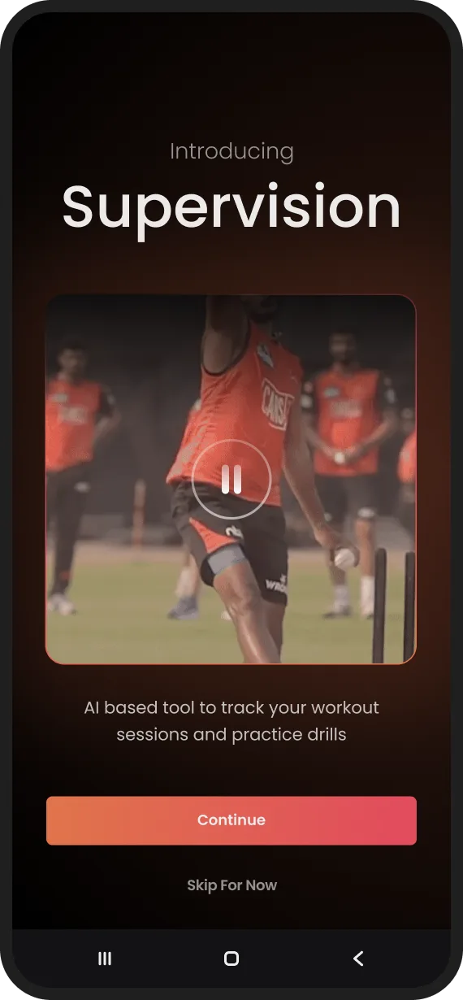
First-run onboardingTeach a camera-scored drill to a 12 year old. The in-app eventMostly the time between attempts.The olympiad ran 25 May to 15 June, and marketing needed the pages before it opened.
What it forcedDates lead the page, and the deadline stays visible everywhere.
Students compete, parents pay, academies bring whole cohorts.
What it forcedThree distinct promises, sequenced down a single landing page.
Registration and payment both happen on the web.
What it forcedReassurance beside the form, before anyone downloads the app.
No formal design system. New screens had to feel native.
What it forcedType, scale and state patterns, all inside the existing language.
One designer, a PM, an engineer and the CEO.
What it forcedOwning every screen: website, onboarding and the live event.
First-run onboarding
If onboarding fails, the drill cannot be scored, and in a paid event that becomes a refund request. So I designed it as a rehearsal: hold the phone, prop it up, step away, then move. Scroll to walk all nine screens, or step through them yourself.
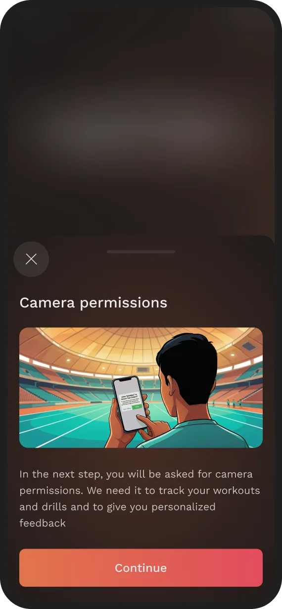
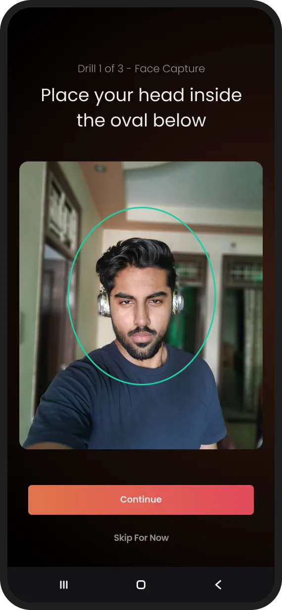
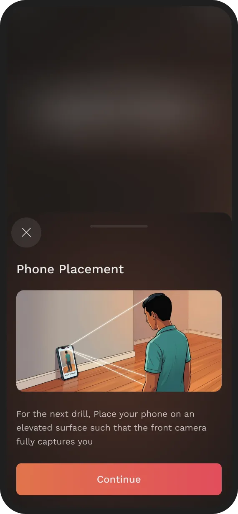
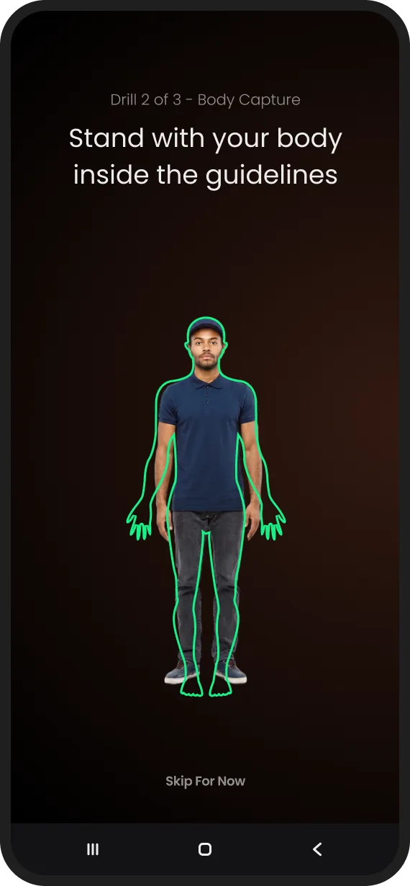
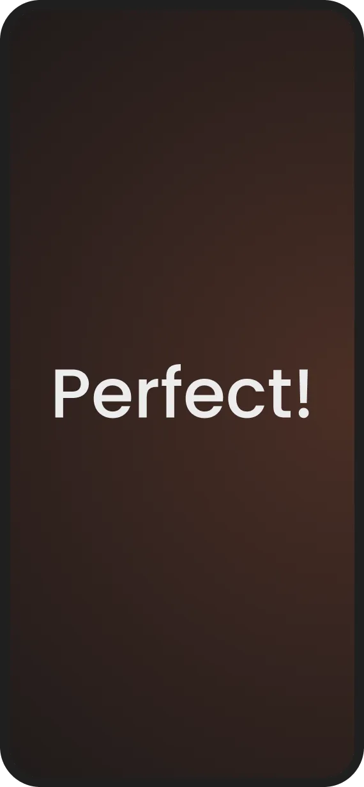
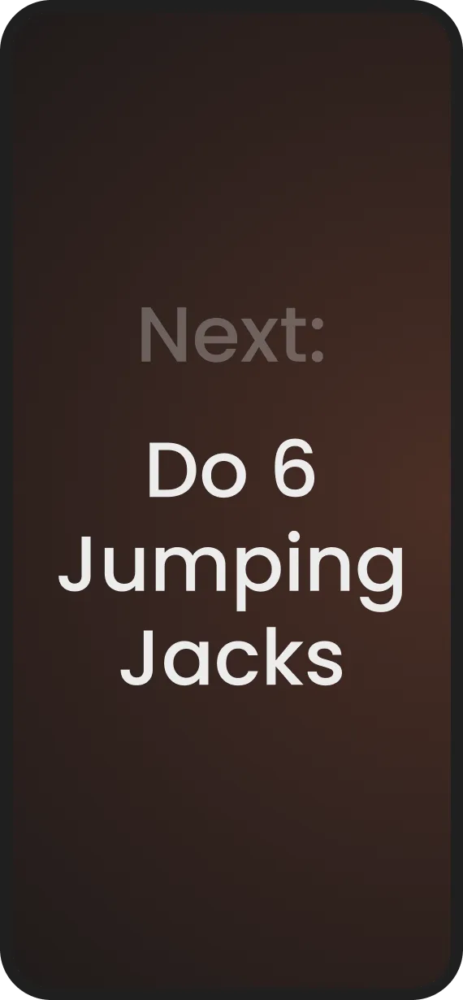
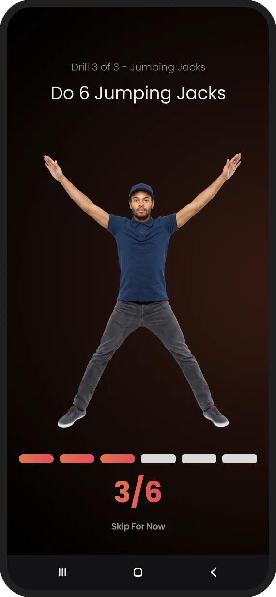
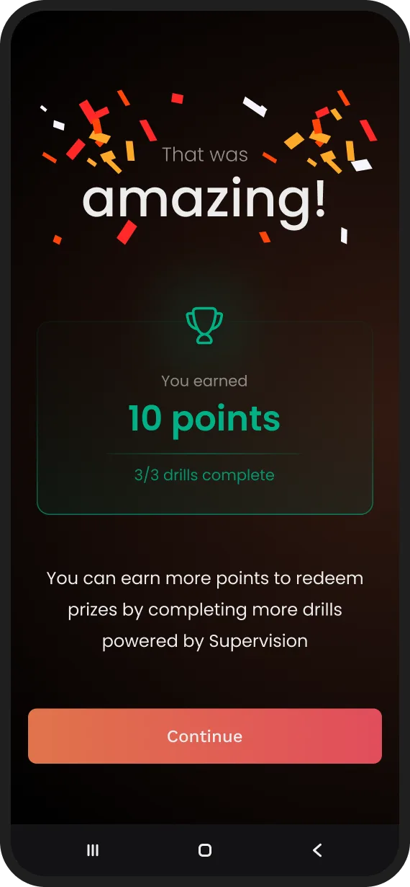
1 of 9
A video introduces camera-based scoring before the app asks for access.
Why rehearse at all
Onboarding does not explain the app. It runs the exact screen the scored test will use, so the first time it counts is the second time you have seen it. Side by side, only the drill and the stakes change.
Rehearsal Onboarding, screen 8 of 9
The real test Scored, drill 1 of 3
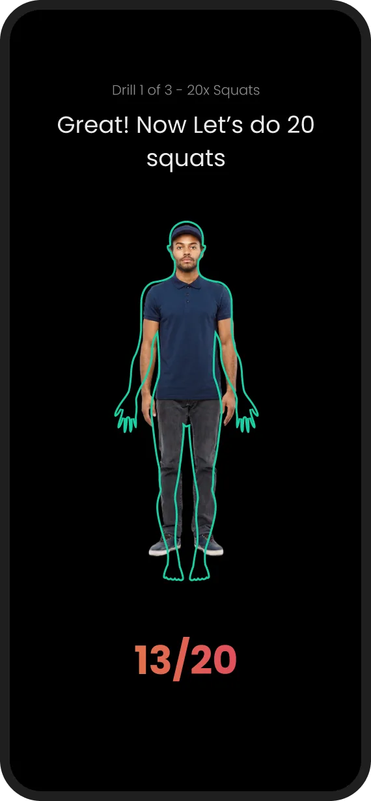
A player’s first scored drill is never their first drill.
The instruction, the body guide and the counter have all been seen once already, with nothing at stake. The first attempt that counts should never fail because the screen was new.
Every onboarding step keeps “Skip for now”.
It gives returning users a way through, and also lets a first-timer skip the rehearsal that makes their first drill scoreable. I shipped that trade-off knowingly.
Landing and registration
The student, the parent paying and the academy coach all arrive at the same URL. Pick a screen size and watch what each of them still gets, and what the narrow fold takes away.
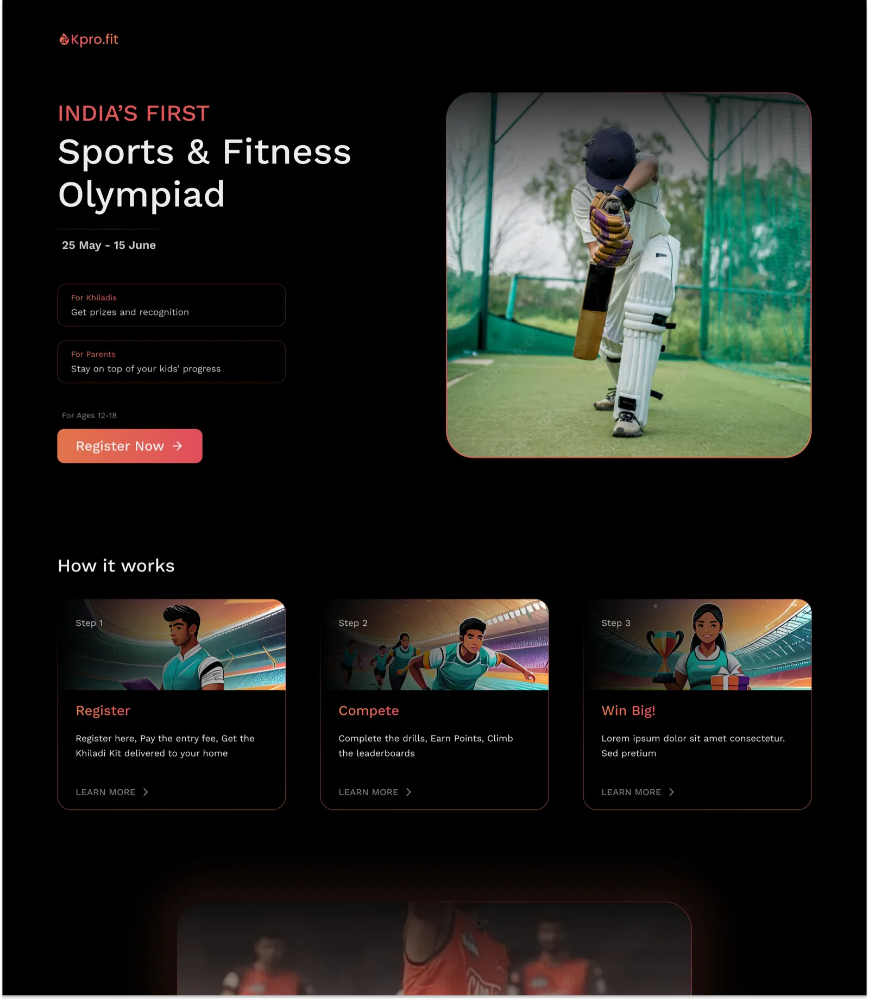
Not on the first screen.
Above the fold at 1440 px
The photograph sits alongside the offer, not below it.
Design-stage export. A clean re-export is pending.
From the page to the form
Payment happens on the web, before anyone installs anything. A parent is deciding with no product to try, so three decisions all carry the same job: keep them typing.
The in-app event
The olympiad ran inside KhiladiPro’s main app. Between drills, this is where participants spent their days: getting in, seeing what came next, deciding whether to start a 24-minute test and checking what counted.
“I paid on the web. How do I get in?”
Unregistered An event introduction and the access code sent by email.
They came back
After the olympiad, the growth team brought me back for a second engagement: the landing page for an IPL fan campaign, on desktop and mobile.
The first engagement
The landing page, registration, onboarding and the in-app event, across the website and the app.
The second engagement
A page that had to convert fans during a live tournament. The in-house team owned the app screens.
Outcome
Everything I designed for KhiladiPro shipped: the web journey, the onboarding and the event screens. Nothing was redrawn by someone else on the way to build.
Unfinished business
No analytics access meant no impact story. These are the two things I would set up first if the olympiad ran again.
MeasureThree funnels, none of which existed.
TestIn their own rooms, not in a lab.
Source material
Seven Figma prototypes, from the first lo-fi structure through to the live-event flow. All of them open in a new tab.
“He showed intuitive product thinking, is very proactive with his contributions and gives a lot of attention to detail.”